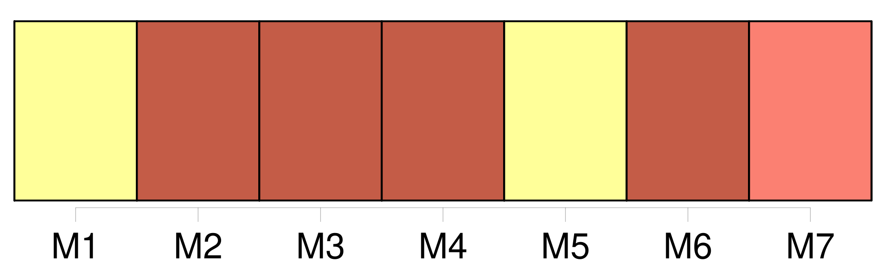
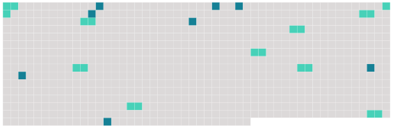

Longueur nb maillons : 18 mentions |
  |
[L'enfant] , à tout âge, doit honneur et respect à [ses] père et mère. [1 phrases]
Il reste sous leur autorité jusqu'à [sa] majorité ou [son] émancipation. [3 phrases]
[L'enfant] ne peut quitter la maison paternelle sans la permission de [son] père, si ce n'est pour enrôlement volontaire, après l'âge de dix-huit ans révolus. [1 phrases]
Le père qui aura des sujets de mécontentement très-graves sur la conduite d' [un enfant] , aura les moyens de correction suivans. [1 phrases]
Si [l'enfant] est âgé de moins de seize ans commencés, le père pourra [le] faire détenir pendant un temps qui ne pourra excéder un mois ; et, à cet effet, le président du tribunal d'arrondissement devra, sur sa demande, délivrer l'ordre d'arrestation. [1 phrases]
Depuis l'âge de seize ans commencés jusqu'à la majorité ou l'émancipation, le père pourra seulement requérir la détention de [son enfant] pendant six mois au plus ; il s'adressera au président dudit tribunal, qui, après en avoir conféré avec le commissaire du Gouvernement, délivrera l'ordre d'arrestation ou le refusera, et pourra, dans le premier cas, abréger le temps de la détention requis par le père. [5 phrases]
Si après sa sortie [l'enfant] tombe dans de nouveaux écarts, la détention pourra être de nouveau ordonnée de la manière prescrite aux articles précédens. [3 phrases]
La mère survivante et non remariée ne pourra faire détenir [un enfant] qu'avec le concours des deux plus proches parens paternels, et par voie de réquisition, conformément à l'article 377. [1 phrases]
Lorsque [l'enfant] aura des biens personnels, ou lorsqu' [il] exercera un état, [sa] détention ne pourra, même au-dessous de seize ans, avoir lieu que par voie de réquisition, en la forme prescrite par l'article 377. [9 phrases]
La nourriture, l'entretien et l'éducation [des enfans] selon leur fortune ; [5 phrases]
Elle ne s'étendra pas aux biens que [les enfans] pourront acquérir par un travail et une industrie séparés, ni à ceux qui [leur] seront donnés ou légués sous la condition expresse que les père et mère n'en jouiront pas. |
 |
La ressource peut être téléchargée sur la page Ortolang
Si vous avez des questions ou vous voyez des erreurs, merci d'envoyer un mail à silvia.federzoni89@gmail.com
Site développé par S. Federzoni (contact)